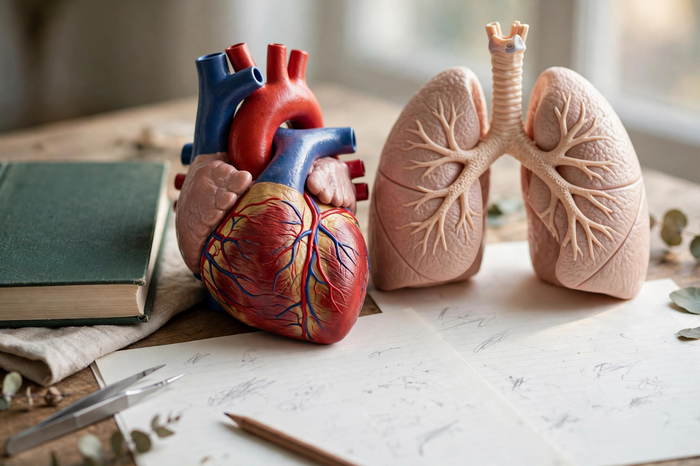
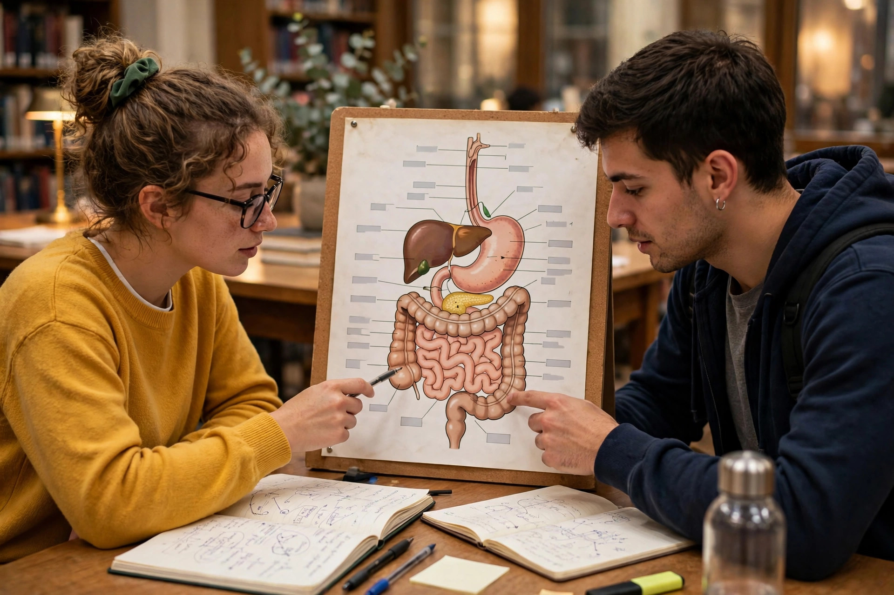

Open any PPSC one-paper test and you will find the human body waiting for you. How many bones in an adult? Where does digestion begin? Which organ filters the blood? These look like school science, and that is why they are dangerous: students answer from memory and lose easy marks.
The truth is kinder than it looks. Examiners do not test deep medical detail — they test the same facts again and again, one fact per system. Learn each system as one short story with one hero organ, and this topic turns into reliable marks.
Why Examiners Love Body Systems
In the PPSC one paper exam — 100 MCQs in 90 minutes, −0.25 per wrong answer, 40% to qualify — Everyday Science is where a prepared student scores fastest. Body-system questions are pure recall. If you know the fact, you answer in five seconds.
The topic is also beautifully repeatable: a fixed set, so revision is just re-reading the same list — unlike Current Affairs, where the syllabus changes every month. If you are new to the subject, start with our Everyday Science most repeated topics guide, then come back here for the detail.
The Digestive System: A Journey, Not a List
Do not memorise the digestive organs as a list — walk the food through them. Digestion begins in the mouth, where teeth grind food and saliva starts breaking down starch. The food pipe carries it to the stomach, where acid and enzymes make a semi-liquid mixture. Then comes the small intestine, the real hero: most digestion and absorption happen here, helped by bile from the liver and juices from the pancreas.
For MCQs, hold three facts tight. The liver, the largest internal organ, produces bile, which helps digest fats — but bile contains no digestive enzyme itself, a classic trap. The pancreas is a double agent: it makes digestive enzymes and insulin. And the stomach digests proteins, not starch.
The Circulatory System: The Heart Is a Double Pump
The heart has four chambers — two atria on top, two ventricles below — and works as a double pump: one side sends blood to the lungs, the other around the body. Arteries carry blood away from the heart, usually oxygen-rich, while veins bring it back, usually oxygen-poor. The pulmonary artery is the famous exception: it carries oxygen-poor blood to the lungs.
Blood has four parts: red cells carry oxygen using haemoglobin, which contains iron — so iron deficiency causes anaemia; white cells fight infection; platelets clot the blood; plasma carries everything else. A normal resting heartbeat is around 72 beats per minute, and O negative is the universal donor while AB positive is the universal recipient.

The Respiratory System: Breathing Is Chemistry
Breathing looks simple — air in, air out — but the exam asks about what happens in between. Air enters through the nose, passes down the windpipe (trachea), splits into two bronchi, and reaches tiny air sacs called alveoli. There, oxygen passes into the blood and carbon dioxide passes out.
Two numbers anchor this topic: an adult at rest breathes about 12 to 20 times per minute, and the diaphragm below the lungs does most of the work of breathing in. The trap is confusing breathing with respiration: breathing moves air, while respiration releases energy inside cells from glucose.
The Nervous System: The Body's Wiring
The nervous system has three parts: the brain, the spinal cord, and the nerves connecting them to the body. The brain divides neatly for MCQs: the cerebrum handles thinking, memory and movement; the cerebellum, at the back, controls balance; the medulla, at the base, runs the automatic jobs — heartbeat, breathing and blood pressure.
Messages travel as electrical signals along neurons, jumping across tiny gaps called synapses. Here is a fact students often get wrong: a reflex action — pulling your hand from a hot surface — is controlled by the spinal cord, not the brain, which is why it happens before you feel the pain. Pair this with the endocrine system: glands release hormones into the blood, and the pituitary is the master gland because it controls the others.
The Excretory System: The Kidney Does the Filtering
The kidneys are the body's filters. Each contains about a million tiny nephrons, which remove waste, salts and water from the blood to form urine. Urine travels down the ureters to the bladder and leaves through the urethra. The main waste product is urea, formed in the liver.
Two confusions cost marks here. The kidney filters blood; it does not make blood cells — that is the bone marrow's job. And skin is also an excretory organ, removing salts through sweat. If a question asks for the functional unit of the kidney, the answer is the nephron, every time.
The Skeletal and Muscular Systems: The Frame and the Engine
An adult human has 206 bones; a newborn has around 300, and many fuse as the child grows — a favourite MCQ contrast. The longest bone is the femur; the smallest is the stapes in the middle ear. Bones meet at joints, held by ligaments, while muscles attach through tendons: ligament joins bone to bone, tendon joins muscle to bone.
Muscles work in pairs: when one contracts, its partner relaxes. And the immune system deserves one line: white blood cells are its soldiers, and vaccination trains them to recognise a germ before infection arrives.

A 7-Day Plan to Master Body Systems
Day one, read this guide once and write each system's hero organ from memory: small intestine, heart, alveoli, brain and spinal cord, kidney, bones. Days two and three, learn the numbers — 206 bones, 72 beats per minute, 12 to 20 breaths, one million nephrons — on flashcards. Day four, attack the traps: pulmonary artery, bile with no enzymes, reflex from the spinal cord, ligament versus tendon. Day five, test yourself on Everyday Science MCQs and log every miss in your error notebook. Day seven, take a timed run in the exam simulator and a full-length 100-MCQ practice set.
5 Traps That Cost Marks on This Topic
- Digestion begins in the mouth. Saliva starts starch digestion before food reaches the stomach.
- The pulmonary artery breaks the rule. It carries oxygen-poor blood to the lungs.
- Breathing is not respiration. Respiration releases energy inside cells.
- Reflexes skip the brain. The spinal cord controls them, which is why they are so fast.
- Ligament versus tendon. Ligament joins bone to bone.
Human body systems are a fixed, friendly set of facts. Learn one story per system, drill the numbers, dodge the five traps, and walk into the paper with these marks already in your pocket.
- Digestive hero: the small intestine — most digestion and absorption happen there; liver makes bile.
- Circulatory hero: the four-chambered heart — pulmonary artery is the oxygen-poor exception; O negative, universal donor.
- Respiratory hero: the alveoli — gas exchange happens there.
- Nervous hero: brain and spinal cord — cerebellum for balance, medulla for automatic jobs.
- Excretory hero: the kidney — nephrons filter blood into urine; adults have 206 bones.
Frequently Asked Questions
How many bones are there in the adult human body?
206. A newborn has around 300 bones, and many fuse during growth — which is why the two numbers are tested side by side.
Which organ is the functional unit of the excretory system?
The kidney, and its functional unit is the nephron — about a million per kidney filter waste from the blood into urine.
Where does digestion of food actually begin?
In the mouth, where saliva begins breaking down starch. The stomach handles proteins; most absorption happens in the small intestine.
What is the difference between breathing and respiration?
Breathing is air moving in and out of the lungs. Respiration is the chemical process inside cells that releases energy from glucose.
Start practicing — free, no login needed
195,000+ MCQs · solved past papers · real exam simulator with timer & negative marking